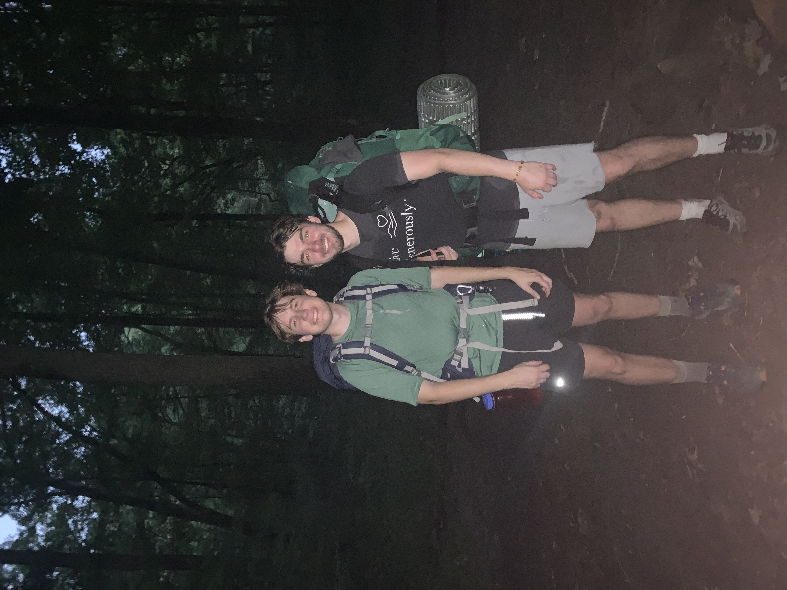
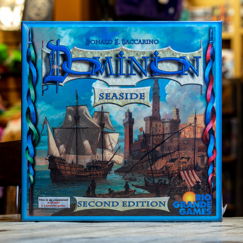
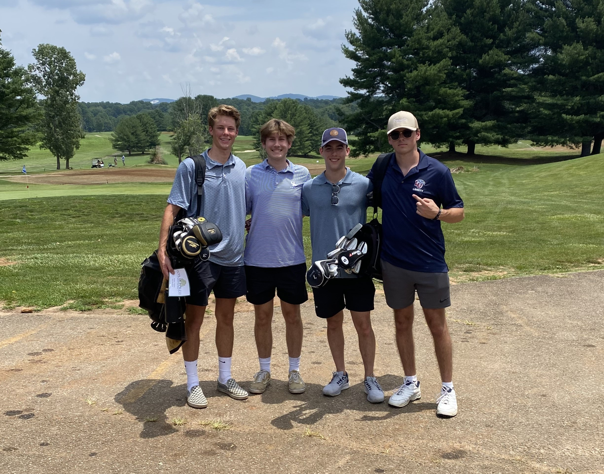
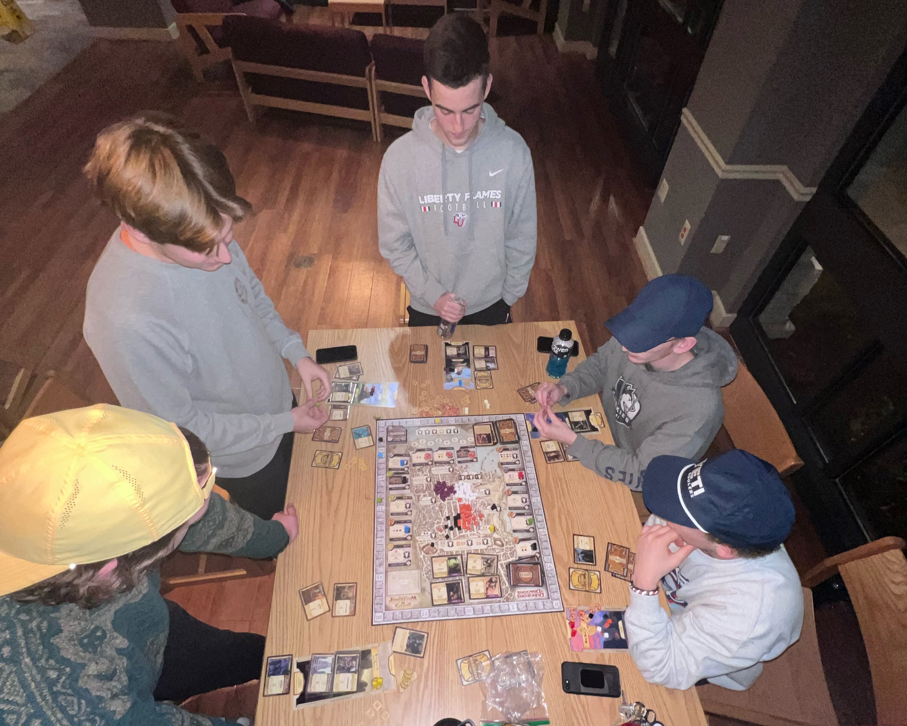
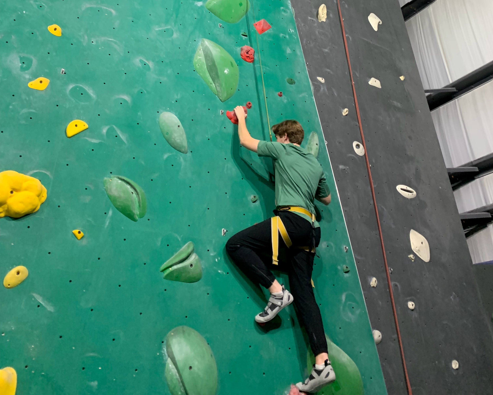
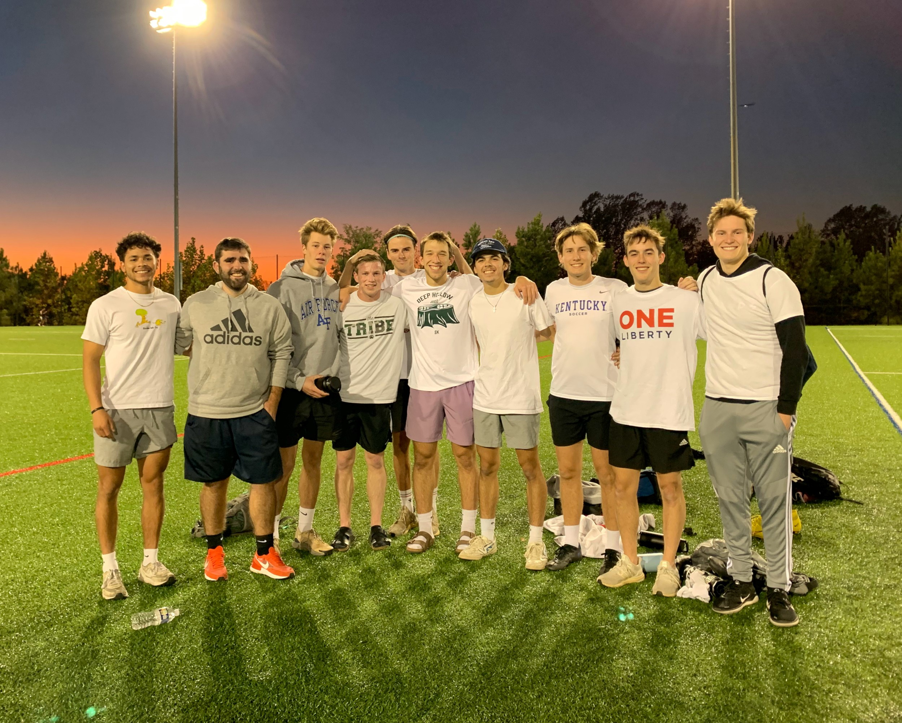
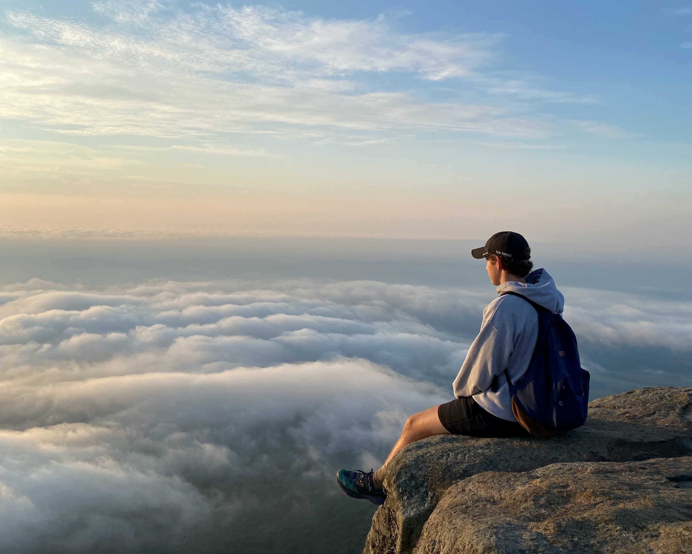
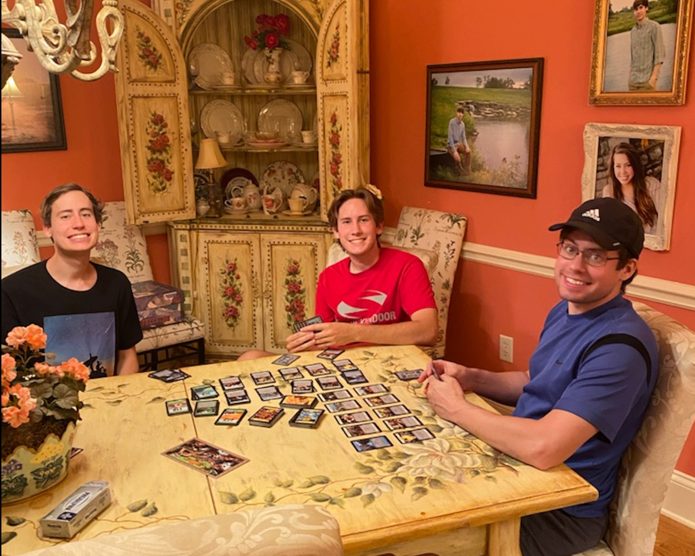

Yearly Backpacking Trip
July 2nd, 2023
Arriving at night, a soaked campsite, and taking the wrong trail are all key elements to a memorable ....

Board Game Review: Dominion Seaside Second Edition
May 13th, 2023
Dominion quickly became my favorite game of 2022 and as I was leaving ....

Trying Something New: Golf
April 25th, 2023
Growing up Golf never seemed like something I would get into. My Dad did not play nor did anyone in my ....

Board Game Review: Lords of Waterdeep
January 13th, 2023
There's no better way to start a semester than playing competitive ....
Wonders of New Life
Demeber 20th, 2022
Phineas Strunk is the newest edition to the Strunk Family. Born December 2022. Immediately, my parents ....

Trying Something New: Rock Climbing
December 2nd, 2022
Technically I have rock climbed before, but that was a long time ago when I ....

Looking back at Ultimate Frisbee
November 10th, 2022
The start of another semester means the start for another intramural ultimate frisbee campaign. The semester ....

Why Everyone Should Do a Sunrise Hike
September 3rd, 2022
Picture this: watching the sunrise as you're above the clouds. Sharp Top ....

Board Game Review: Dominion Second Edition
August 6th, 2022
Reflecting on the summer brings a lot of good memories, one I'll cherish ....
Looking back at Ultimate Frisbee
By Josh Strunk, November 10th, 2022
The start of another semester marks the start of yet another intramural ultimate frisbee campaign. Although we returned many players and thought we had good new recruits,
we somehow fell flat the
whole season and ended with an unimpressive 3-9 record. Although our record was embarrassing, finishing as the third worst team, I think we were actually better than that showing. Injuries and questionable plays that revealed that we did not fully trust teammates plagued us the whole year.
Even with those poor conditions, we still had our share of close games. We lost a tight 8-12 game in the second week. After that, we won two in a row which improved BYE WEEK to 2-3 in the ranking, although from there it went downhill -- fast.
We fell to Disc Jockeys, who some old teammates left for, 7-9 in a close and hard-fought game. After that, BYE WEEK lost 4-9 to the eventual champions, which doesn’t sound bad until it is considered that they only had 5 people versus our full 7 playing on the field.
The rest of the season was a blur with losses. We ended our season in a close playoff game in which we had possession of the disc on the last drive of the game -- while down 1 point -- and threw it away in the end zone to lose the game and finish the season in a completely unexpected way.
Wonders of new life
Demeber 20th, 2022
Phineas Strunk is the newest edition to the Strunk Family. Born December 2022. Immediately, my parents parents and I headed to visit my brother, sister-in-law, and their new baby boy. After a long wait I was finally an uncle, although my
parents were over the moon to meet Phin because they had waited even longer to become grandparents. Visiting Phin generated in me a new appreciation of life; as I held him
I thought how at one point in my life I was just the same as newborn Phineas is now: brought into a loving family yet with complete dependance upon my mother.
God is so gracious to give us the gift of life and the ability to continue life with a family in which we love one another. While I love being at Liberty, I also cannot wait to visit my nephew and see my whole family once again, too.
Why Everyone Should Do a Sunrise Hike
September 3rd, 2022
Picture this: watching the sunrise as you're above the clouds. Sharp Top Mountain in Virginia offers just this. The hike was nothing new to me; I had done it once before as a sophomore at Liberty,
yet, it was remarkably more enjoyable the second time around. The only downside was waking up to leave at 4am, but once we were there and started the ascent it became all worth it.
The hike took nearly an hour and we arrived at the top right as the sun was coming up. We were greeted by others who had spent the night on top of the mountain in anticipation of the sunrise.
The view was at 3,375 feet is something to marvel at. The 360-degree view was full of countryside and other mountains, although not nearly as tall. Once the sun was up, we did what every college student who
goes on a hike does, take way to many pictures. Once every picture combination was taken we sat in silence and took in the creation of a powerful God.
The sunrise hike is truly a unique experience that I believe everyone should go on at least once, even if they don’t like hiking. It was a wonderful trip I look back on very fondly. I would do it again if given the chance.
The pain of waking up so early as a college student and seeing the gas tank drop to empty is worth it for a special view.
Trying Something New: Rock Climbing
December 3rd, 2022
Technically, I have rock climbed before, but that was a long time ago when I was still in Boy Scouts. That is coming up on seven years ago now, which is a shock. I remember visiting Liberty, seeing the
rock wall, and thinking it was so cool they had one in their gym just for students. I still tell friends about it when they visit Liberty. Even though I came in as a freshman thinking it was cool, I did not make use of the rock-climbing wall at all in my first two years at school.
It was always on my mind whenever I went to the gym, but I always backed out from a shot at it; I was afraid of being bad and embarrassing myself in front of people who were good at climbing. I even had a friend in class that climbed, and I always told him I wanted to try it.
Once I finally tried out Liberty's wall, I realized that my fear was unfounded; all the climbers at Liberty are so friendly and encouraging.
What changed that I finally tried the climbing wall? A student on my hall had climbing shoes on his floor during curfew checks; I noticed them, asking how long he had climbed and told him I had climbed outdoors when I was younger but never at Liberty.
This student, Ethan, suggested that I climb with him at least once a week for the next ten weeks. Finally, I told him I would go, if there were not more than a few people there! We picked a normally slow time and planned to go. I was nervous and almost backed out at the last second, but he was moving off the hall, and as his RA I did not want to cancel our plans together.
Once I actually climbed a V0, the easiest rating the bouldering route can be, I thought "well this isn’t too bad actually!" I started to enjoy myself as Ethan introduced me to one of the two other climbers there and we got to talking about climbing and random other topics.
I ended the day climbing a V1, which is just a step up from V0, after a few more V0s. I actually had a lot of fun and expressed to Ethan that I wish I had tried climbing sooner. As finals week approaches, it will be harder to get to the wall, but I am really looking forward to my next climb. I am thankful for friends like Ethan who share the joy of a hobby, challenging and stretching me for the better -- instead of leaving me the same as I was when we met.
Board Game Review: Dominion Second Edition
August 6th, 2022
Reflecting on the summer brings a lot of good memories; especially, I will cherish playing the board game Dominion for the first time with my older brothers, John and David. We grew up playing Pokémon
trading card game together. We bought countless packs of cards, many of which we still have, in trying to build the best decks. David was always better than John and me. It would take both of us together using different decks versus his one to even come close to beating David's Salamence deck.
In a quest to duplicate the fun we had as kids growing up, I browsed top rated board games and rediscovered Dominion. (I had played it once in high school and thought it was a solid game,
but that was before I regularly played board games and actually had had the mistaken opinion that they were all as bad as Monopoly.) With Dominion being a deck building game, I instantly thought my brothers would love this! Naturally, I immediately checked eBay and bought a copy two days later.
Now the only hurdle to our brotherly fun is that John does not live in Kentucky any more, so I awaited our game together with great anticipation. After a month, John was finally visiting Kentucky once again and I could show my brothers my new board game. After the first game I was reminded that David and John
were so much better at deck builder games than I was. The fact is that when we were younger, I mostly just took a deck John had built: it was most certainly not this favorite. He would explain the synergies to me right before we would play. This lack of deep understanding resulted in me losing almost every time.
Dominion was different though: the randomly selected "Kingdom" allows for a novice deck builder like myself to have a more level playing field; more expert players could not plan their moves days in advance nor perfect their decks in advance, although David still was the best with his Pokémon Trading Card Game experience.
Dominion has brought me back memories of playing Pokémon with my brothers -- and that is a unique experience I will love forever. While I am not an experienced gamer or reviewer, I will say that I cannot recommend Dominion: Second Edition highly enough. Even after a week of playing multiple games, we found that every time we played, we still found new strategies for playing the game.
Because of the many different combinations there is so much replay ability, which is furthered with every added expansion. Speaking of which, after looking into the expansions, I think the first I will get will be Seaside: Second Edition as it was just released last June. I’ll leave an update on that once I own it, but until then I’m happy with the purchase of Dominion and give it a 9 out of a possible 10.
Board Game Review: Lords of Waterdeep
January 13th, 2023
There is no better way to start a semester than playing competitive board games. While I was not excited for a second RA lock down, it did bring a chance to hang out with my RA team and play some
new board games. One of these is Lords of Waterdeep, a game I had bought at the end of Christmas break. Playing it for the first time was challenging as none of us had played a "worker placement" game before, but once we passed the learning curve and got into it, we found the game to be very enjoyable: it was competitive while also not being too mentally heavy so that we could talk about other things as we placed our agents.
Lords of Waterdeep was an absolute blast every time we played it that week; although, the five-player version was not quite as fun as the four-player. The only issue we had was the Builder winning three out of three games in which it showed up; this was made worse in that we only played four games.
The six points per building compared to the normal four from a quest seemed too steep of a reward. This could have been because we were all novice players and were not sure about how to block the Builder’s Hall consistently. Although, it always seemed that the player with the Builder role also had access to play an agent where another agent was already in almost every game. These agents were the workers
which would gather resources for the player. Most places only allowed one agent to be placed there a round, in which there are only eight. So this ability to go somewhere again after someone went there first was a strong advantage for the Builder.
Even considering that, I am interested in searching out more worker placement games such as Puerto Rico -- and slightly more complex games as well. Before this one, Catan was probably the most complex game which I had played. Overall, Lords of Waterdeep was a ton of fun and had wonderful placement options. I am still looking forward to my next session. My rating for Lords of Waterdeep is an 9 out of 10.
Trying Something New: Golf
April 25th, 2023
Growing up Golf never seemed like something I would get into. My Dad did not play nor did anyone in my family. I never thought it was entertaining to watch the few times I watched the master’s
while hanging out in dorms at school. Yet, my brother-in-law enjoyed it and since I was going to be living with them this summer, I thought it might be worth a shot. I reached out to my friend Payton asking if he'd be interested in playing a round and warned him that I hadn’t played before. We got two other friends who were not good and went out for a quick 9 holes. Even though it was clear I had not played, I think I missed the ball more than I hit it, it still was an absolute blast. I’m already looking to get my own clubs and find how I can play as much as possible over the summer. Golf might just be the next thing I get into.
Board Game Review: Seaside Second Edition
May 13th, 2023
Dominion quickly became my favorite games of 2022 and as I was leaving school and looking forward to more game nights with my brothers and friends from home, so I bought the second edition of
Dominion's Seaside. This expansion recreated the popular expansion Seaside by removing the least used cards from the original and adding seven new cards. The main thing that drew me towards Seaside over other expansions was the Duration cards. These cards give you effects on turns after the one you played them on. I thought this was an interesting mechanic that would add lots of flavors to the game. I ended up loving this feature as much as I thought and quickly found myself playing games with mostly Seaside cards in them and not the base games.
Cards such as Fishing Village, Sailor, and Wharf became favorites of both me and my brothers. Overall, I think Seaside Second Edition was a fantastic purchase and well worth the price. It adds an exciting new feature that adds a lot of variation and different strategies. Since it is my first expansion I cannot rate it against any others, but I give it a 9 out of 10 rating.
Yearly Backpacking Trip
July 2nd, 2023
Arriving at night, a soaked campsite, and taking the wrong trail are all key elements to a memorable Backpacking trip. Camping has always been a weekend activity
Dominion's Seaside. This expansion recreated the popular expansion Seaside by removing the least used cards from the original and adding seven new cards. The main thing that drew me towards Seaside over other expansions was the Duration cards. These cards give you effects on turns after the one you played them on. I thought this was an interesting mechanic that would add lots of flavors to the game. I ended up loving this feature as much as I thought and quickly found myself playing games with mostly Seaside cards in them and not the base games.
Cards such as Fishing Village, Sailor, and Wharf became favorites of both me and my brothers. Overall, I think Seaside Second Edition was a fantastic purchase and well worth the price. It adds an exciting new feature that adds a lot of variation and different strategies. Since it is my first expansion I cannot rate it against any others, but I give it a 9 out of 10 rating.